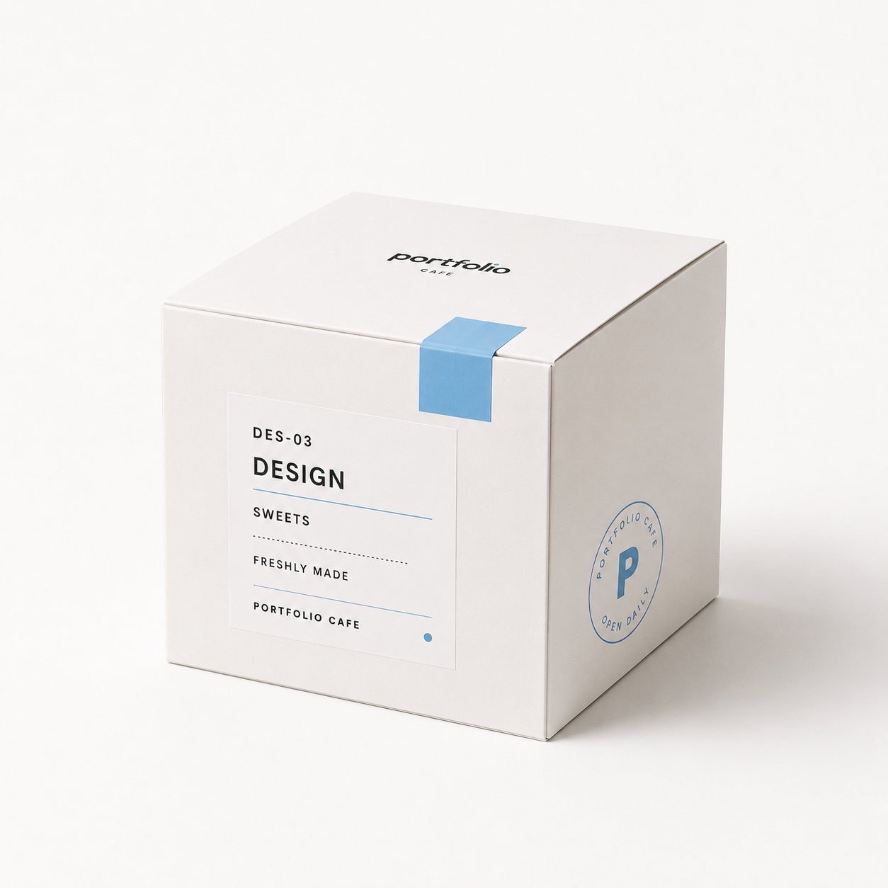

CATEGORY / DES-03
DESIGN
目に入る順番まで、
設計する。
Photoshop、Illustrator、Canvaなどを使用して制作したデザインを掲載しています。用途や目的に合わせて、情報が伝わる配色・余白・構成を考えています。
VISUAL WORKS / DISPLAY

DISPLAY / CATEGORY
カテゴリから見る
制作ツールと表現方法ごとに整理しています。
FEATURED / TODAY'S DISPLAY
SELECTED VISUAL WORKS
代表作品を先に紹介し、その他の公開作品は必要なときに展開できます。
作品データを読み込んでいます。
DESIGN NOTES
制作の視点
見た目だけで終わらせず、目的と情報の届き方から考えます。
- 01
目的に合う見せ方
- 02
情報の優先順位
- 03
配色と余白
- 04
Webとの一貫性
- 05
改善を前提とした制作
TOOLS / COUNTER
使用ツール
- PsPhotoshop
- AiIllustrator
- CaCanva
- GPTChatGPT
COUNTER / NEXT
NEXT ORDER
ほかの制作カテゴリと、ご連絡先へ続きます。